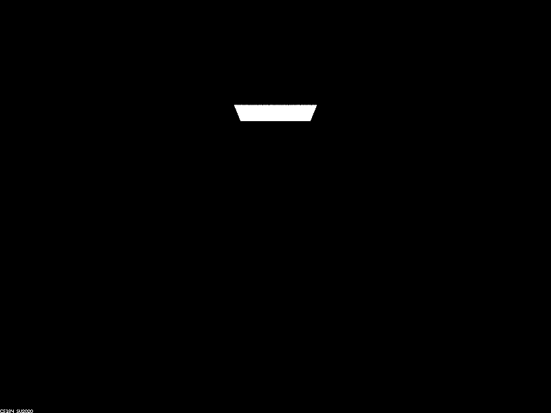
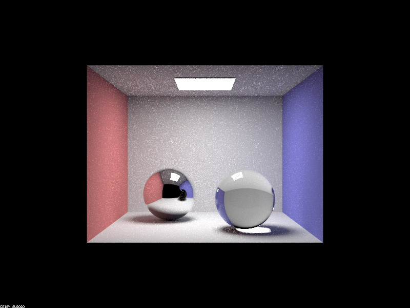

Part 1. Mirror and Glass Materials
Show a sequence of six images of scene `CBspheres.dae` rendered with `max_ray_depth` set to 0, 1, 2, 3, 4, 5, and 100. The other settings should be at least 64 samples per pixel and 4 samples per light. Make sure to include all screenshots.
|

|
|

|

|
|
|
|
|
Point out the new multibounce effects that appear in each image.
At max ray depth 0, only the light source can be seen. Increasing max ray depth to 1, the floor, walls, and outline of the spheres appear. Increasing to 2, the ceiling appears and the left sphere shows a reflection of the scene. Increasing to 3, the right sphere refracts the walls. Increasing to 4, the reflection of the right sphere in the left sphere is updated to have color, while the right sphere refracts more light from different directions. With max ray depth 5 and 100, everything in the scene becomes brighter.
Explain how these bounce numbers relate to the particular effects that appear. Make sure to include all screenshots.
Certain features of the scene will only appear with an increased number of bounces. For example, with max ray depth 0, the scene is entirely black aside from the light source because the rays don't bounce off anything, therefore not revealing anything in the scene. Furthermore, rays responsible for the reflections and refractions seen in the spheres require more bounces to actually reach the spheres and have an effect on their appearance. The same can be said about their shadows. As a result, more features appear as we increase the maximum number of ray bounces.
Part 2. Microfacet Material
Show a screenshot sequence of 4 images of scene `CBdragon_microfacet_au.dae` rendered with $\alpha$ set to 0.005, 0.05, 0.25 and 0.5. The other settings should be at least 128 samples per pixel and 1 samples per light. The number of bounces should be at least 5. Describe the differences between different images. Note that, to change the $\alpha$, just open the .dae file and search for `microfacet`.
Your response goes here.
Show two images of scene `CBbunny_microfacet_cu.dae` rendered using cosine hemisphere sampling (default) and your importance sampling. The sampling rate should be fixed at 64 samples per pixel and 1 samples per light. The number of bounces should be at least 5. Briefly discuss their difference.
Your response goes here.
Show at least one image with some other conductor material, replacing `eta` and `k`. Note that you should look up values for real data rather than modifying them arbitrarily. Tell us what kind of material your parameters correspond to.
Your response goes here.
Part 3. Environment Lightl
Pick one *.exr* file to use for all subparts here. Include a converted *.jpg* of it in your website so we know what map you are using.In a few sentences, explain the ideas behind environment lighting (i.e. why we do it/how it works).
Your response goes here.
Show the *probability_debug.png* file for the *.exr* file you are using, generated using the `save_probability_debug()` helper function after initializing your probability distributions.
Your response goes here.
Use the `bunny_unlit.dae` scene and your environment map *.exr* file and render two pictures, one with uniform sampling and one with importance sampling. Use 4 samples per pixel and 64 samples per light in each. Compare noise levels. Make sure to include all screenshots.
Your response goes here.
Use a different image (if you did part 2, we recommend `bunny_microfacet_cu_unlit.dae`) and your environment map *.exr* file and render two pictures, one with uniform sampling and one with importance sampling. Use 4 samples per pixel and 64 samples per light in each. Compare noise levels. Make sure to include all screenshots.
Your response goes here.
Part 4. Depth of Field
For these subparts, we recommend using a microfacet BSDF scene to show off the cool out of focus effects you can get with depth of field!In a few sentences, explain the differences between a pinhole camera model and a thin-lens camera model.
Your response goes here.
Show a "focus stack" where you focus at 4 visibly different depths through a scene. Make sure to include all screenshots.
Your response goes here.
Show a sequence of 4 pictures with visibly different aperture sizes, all focused at the same point in a scene. Make sure to include all screenshots.
Your response goes here.